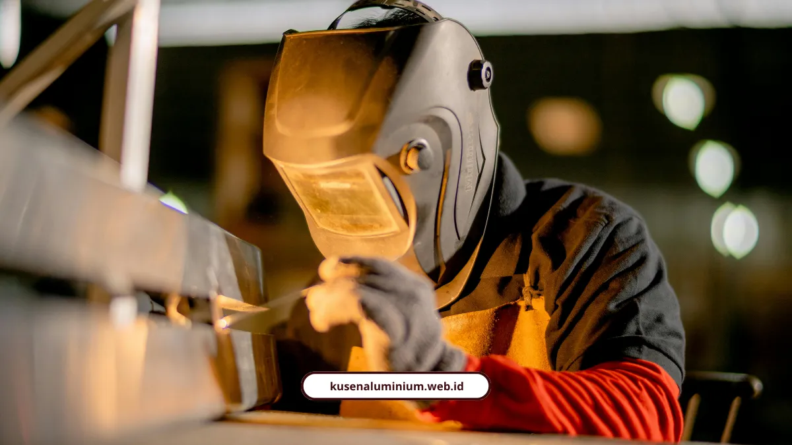
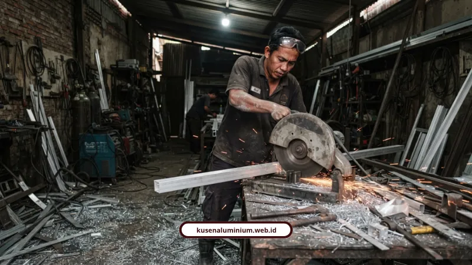

Proses Fabrikasi Kusen Aluminium di Workshop Malang

📌 Ringkasan Inti
Alur proses produksi dan fabrikasi kusen aluminium di workshop Malang kami mengutamakan presisi milimetris dan kepatuhan standar teknis tinggi:
- Proses produksi kusen dimulai dari seleksi billet paduan alloy 6063 berkualitas, pemotongan presisi, perakitan rangka simetris, hingga proteksi finishing.
- Workshop kusen Malang kami dilengkapi mesin potong presisi (band saw, circular saw non-besi, dan laser cutter) untuk menghasilkan sudut miter 45 derajat tanpa celah.
- Metode perakitan mengombinasikan bracket sudut, sekrup aluminium, paku keling, dan pengelasan TIG berintegritas tinggi dengan distorsi logam minimal.
- Tersedia 3 opsi finishing: anodizing (tahan 20+ tahun untuk cuaca tropis Malang), powder coating warna-warni, serta motif wood effect tahan rayap.
- Pencegahan kebocoran lapangan dipastikan sejak awal melalui penyikuan waterpass akurat, pengisian busa PU, dan aplikasi sealant silikon netral eksterior tahan cuaca.
- Dari Bahan Apa Kusen Aluminium Dibuat?
- Alat Apa Saja yang Dipakai di Workshop Fabrikasi?
- Bagaimana Rangka Kusen Dirakit Setelah Dipotong?
- Apa Pilihan Finishing yang Tersedia dan Mana yang Paling Awet?
- Bagaimana Standar Keselamatan Kerja Diterapkan di Workshop?
- Bagaimana Cara Mencegah Kebocoran Saat Pemasangan di Lapangan?
- Berapa Estimasi Biaya Fabrikasi dan Pemasangan Kusen?
- Kesimpulan
Proses fabrikasi kusen yang kami jalankan di workshop Malang dimulai dari pemilihan billet aluminium, pemotongan presisi dengan mesin khusus, perakitan rangka, sampai finishing anodizing atau powder coating. Semua tahap ini yang menentukan apakah kusen Anda nanti presisi rapat atau malah miring saat dipasang.
Dari Bahan Apa Kusen Aluminium Dibuat?
Dari aluminium alloy, yaitu campuran aluminium, magnesium, dan silikon, supaya hasilnya ringan tapi tetap kuat dan tahan korosi. Logam ini dilebur pada suhu sekitar 660°C lalu ditekan melalui cetakan atau die dalam proses ekstrusi untuk membentuk profil kusen.
Setelah dibentuk, profil didinginkan bertahap lalu dipotong menjadi batang standar sepanjang 6 meter. Batang inilah yang kemudian jadi bahan baku utama sebelum masuk workshop kami.
Beberapa merek yang beredar di pasaran dan sering kami pakai:
- YKK: standar Jepang, presisi tinggi, finishing sangat halus, kokoh untuk bukaan besar, kelas premium.
- Alexindo: merek lokal populer untuk proyek menengah sampai besar, harga kompetitif, varian warna dan ukuran beragam.
- Inkalum: solusi ekonomis untuk hunian fungsional atau bukaan standar.
Ukuran profil yang tersedia umumnya dua pilihan ketebalan utama, yaitu 3 inci dan 4 inci, dan pemilihannya disesuaikan kebutuhan proyek. Detail lengkap soal ketebalan mana yang cocok untuk bukaan tertentu sudah kami bahas di standar material aluminium yang kami gunakan.
Alat Apa Saja yang Dipakai di Workshop Fabrikasi?
Ada dua kelompok alat utama, yaitu alat pemotong dan alat pembentuk, dan semuanya butuh presisi tinggi. Salah pilih alat bisa bikin hasil potongan tidak simetris.
Alat pemotong yang kami gunakan:
- Gergaji pita (band saw) untuk pemotongan batang stok.
- Gergaji bundar (circular saw) dengan mata pisau khusus logam non-besi.
- Pemotong laser (laser cutter) untuk akurasi bentuk yang rumit.
Alat pembentuk yang melengkapi proses:
- Press brake atau rem tekan untuk pembengkokan sudut.
- Roll bender untuk membentuk lengkungan.
Jason Liu, Head of R&D Team di Foshan Iwon Metal Products Co., Ltd., menekankan pentingnya kelengkapan alat produksi khusus dalam fabrikasi aluminium. Pemotongan dengan gergaji presisi atau laser cutter serta pembentukan memakai press brake dan pengelasan TIG sangat menentukan hasil akhir, karena teknik TIG mampu menghasilkan sambungan las berintegritas tinggi dengan distorsi logam yang sangat minimal.

Bagaimana Rangka Kusen Dirakit Setelah Dipotong?
Komponen yang sudah dipotong sesuai shop drawing kemudian dirakit memakai bracket, screw aluminium, paku keling, pengelasan, atau adhesive bonding. Pemilihan metode sambungan tergantung jenis produk dan bebannya.
Toleransi ukuran dan penyikuan sudut wajib dicek supaya simetris. Kalau tahap ini dilewatkan, saat dipasang di lapangan kusen bisa miring, longgar, atau membentur dinding.
Sudjarwo, praktisi dan penulis konstruksi dari Jendela Nusantara Design & Build, menjelaskan bahwa kualitas akhir pengerjaan aluminium bukan sekadar menempelkan rangka ke tembok, melainkan butuh ketelitian teknis tinggi. Menurutnya, kunci keawetan terletak pada persetujuan shop drawing, penyikuan waterpass dan verticality yang presisi, pengisian busa PU pada celah dinding, serta penggunaan sealant silikon netral dan karet kedap agar ruangan kedap udara dan air.
Proses perakitan yang presisi ini yang jadi bagian penting dalam alur jasa pasang kusen aluminium kami sebelum produk dikirim ke lokasi proyek.
Konsultasi & Fabrikasi Kusen Aluminium Presisi di Workshop Malang
Dapatkan hasil fabrikasi kusen, jendela casement, dan pintu lipat aluminium dengan pemotongan miter 45 derajat presisi dari workshop kami di Lowokwaru Malang, bergaransi resmi.
Apa Pilihan Finishing yang Tersedia dan Mana yang Paling Awet?
Ada tiga pilihan utama, yaitu anodizing, powder coating, dan wood effect, dengan anodizing yang paling tahan lama. Pemilihannya tergantung anggaran dan tampilan yang Anda inginkan.
- Anodizing: pelapisan elektro-kimia yang mempertebal oksida alami aluminium. Tahan goresan, tidak mudah mengelupas, tahan sinar UV, cocok untuk iklim lembap atau pesisir dengan daya tahan lebih dari 20 tahun. Pilihan warna logam meliputi silver, bronze, hitam matte, dan champagne.
- Powder coating: pelapisan serbuk warna yang dipanaskan, punya opsi warna sangat banyak baik matte, glossy, maupun tekstur. Tahan cipratan air dan matahari dengan daya tahan 10 sampai 15 tahun.
- Wood effect: tampilan serat kayu alami tanpa risiko diserang rayap atau pelapukan seperti kayu asli. Daya tahan 10 sampai 15 tahun.
Nizwa Rizqin Qinthara dan M. Rizal Ayuby dari Tim Edukasi YKK AP Sinar Fortuna merekomendasikan finishing anodizing sebagai opsi paling tahan lama untuk iklim tropis, di atas 20 tahun, karena lapisan oksida menyatu langsung dengan substrat aluminium.
Bagaimana Standar Keselamatan Kerja Diterapkan di Workshop?
Standar K3 diterapkan ketat, terutama saat proses pemotongan dan pengelasan yang berisiko tinggi. Dua perlengkapan wajib yang selalu dipakai tim kami:
- Kacamata atau kaca las anti-cahaya saat proses pengelasan agar mata tidak perih atau rusak.
- Sarung tangan kerja saat memegang plat logam, memotong, atau menggerinda agar tangan tidak terluka pinggiran tajam.
Yohanes Priyo Atmojo bersama Dr. A. Hermawati, dalam penelitian mengenai pengembangan bengkel las dan pabrikasi aluminium termasuk studi kasus di Kelurahan Merjosari Kota Malang, menggarisbawahi pentingnya diversifikasi produk serta penerapan prosedur K3. Penggunaan APD standar seperti kacamata las anti-cahaya dan sarung tangan pelindung wajib diterapkan agar proses kerja workshop berjalan kondusif dan bebas risiko kecelakaan.
"Kerapatan dan keawetan kusen aluminium 80% ditentukan dari akurasi perakitan di workshop. Jika sudut pemotongan meleset setengah milimeter saja di meja potong, kusen akan sulit kedap air saat dipasang di tembok."
Bagaimana Cara Mencegah Kebocoran Saat Pemasangan di Lapangan?
Kebocoran paling sering dicegah dengan pengisian busa PU pada celah dinding dan sealant silikon netral eksterior yang tahan UV. Tahap pemasangan sendiri dimulai dari pengukuran bukaan dinding secara milimetris.
Pemasangan kusen menggunakan paku baja, anchor bolt, atau sekrup fixer, dengan memastikan kedudukan waterpass, verticality, dan horizontality benar-benar presisi. Berikut penyebab utama kebocoran yang sering terjadi kalau tahapan ini dilewatkan:
- Memakai sealant interior di luar ruangan, padahal jenis ini mudah retak kena cuaca.
- Permukaan tidak dibersihkan dari debu atau minyak sebelum sealant diaplikasikan.
- Celah terlalu besar tanpa memakai backer rod sebagai penahan.
- Sealant terkena air sebelum proses pengeringan (curing) selesai.
Berapa Estimasi Biaya Fabrikasi dan Pemasangan Kusen?
Perhitungan biaya kusen memakai satuan meter lari berdasarkan keliling kusen, dengan rumus yang berbeda untuk pintu dan jendela. Berikut rumusnya:
- Kusen pintu: (2 x tinggi) + lebar.
- Kusen jendela: 2 x (tinggi + lebar).
Sebagai referensi, pasangan kusen aluminium warna 4 inci membutuhkan bahan seperti profil aluminium, sealant, dan skrup fixer, plus tenaga kerja mulai dari pekerja, tukang aluminium, kepala tukang, sampai mandor, dengan estimasi kisaran Rp190.100 per meter lari termasuk bahan, tukang, dan alat.
Disarankan menyisakan dana cadangan sekitar 5 persen untuk mengantisipasi kenaikan harga material. Kalau Anda butuh hitungan detail sesuai ukuran bukaan di rumah, layanan jasa pasang kusen aluminium kami sudah termasuk survei dan penyusunan RAB gratis di awal.
Kesimpulan
Proses fabrikasi kusen yang benar itu panjang, mulai dari pemilihan billet, pemotongan presisi, perakitan rangka, sampai finishing yang menentukan daya tahan puluhan tahun. Setiap tahap yang kami lakukan di workshop Malang mengikuti standar ini supaya hasil akhirnya presisi saat dipasang di rumah Anda.
Kalau Anda penasaran seperti apa hasil fabrikasi kami di lapangan, silakan cek langsung di galeri proyek kami dan konsultasikan kebutuhan kusen Anda dengan tim kami.
FAQ Seputar Proses Fabrikasi Kusen Aluminium
Proses fabrikasi di workshop biasanya memakan waktu 3 sampai 7 hari kerja, tergantung jumlah bukaan dan tingkat kerumitan desain. Setelah itu baru masuk tahap instalasi di lokasi selama 1 sampai 2 hari.
Anodizing adalah proses elektro-kimia yang mempertebal lapisan oksida alami aluminium dengan daya tahan lebih dari 20 tahun, sedangkan powder coating adalah pelapisan serbuk warna yang dipanaskan dengan daya tahan 10 sampai 15 tahun. Anodizing lebih tahan lama tapi pilihan warnanya lebih terbatas dibanding powder coating.
Penyebab paling umum adalah penggunaan sealant interior yang dipakai di luar ruangan, permukaan yang tidak dibersihkan sebelum aplikasi sealant, atau celah yang terlalu besar tanpa backer rod. Kesalahan ini yang paling sering bikin air merembes meski kusen sudah diberi sealant.